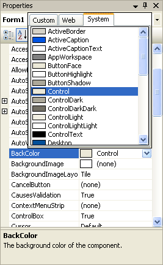
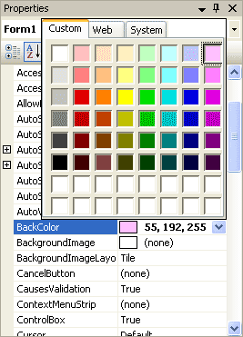
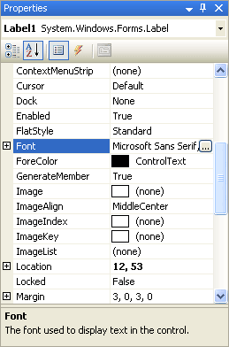
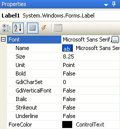

Adding a Splash of Colour
At the moment, our form looks a little bland. Time to liven it up with a splash of colour.
Changing the colour of the Form means we have to change one of its properties - the BackColor property.
So click anywhere on the form that is not a textbox or a label. If you do it right, you should see the sizing handles around the edges of the grey form. The Property Box on the right will read "Form1", and that indicates that you have indeed selected the form. When the Form is selected you can change its properties.
To change the colour of the Form, click the word "BackColor" in the Property Box. Next, click the black down-pointing arrow to the right. A drop-down box will appear.

The default colour is the one selected - Control. This is on the System Tab. The System colours are to set whatever colour scheme the user has opted for when setting up their computers. For example, you can use the Display Properties dialogue box in Windows XP to change how things like menus and buttons look. Someone who is colour-blind might have changed his or her settings in order to see things better on the computer screen. If you stick with the System colours then a colour-blind user of your programme would not have any problems seeing your master work.
As you can see in the image above, you can choose the colour of the Active Caption. The Active Caption is the one you set earlier when you changed the text to "My First Form". The Active Caption is blue on my computer, and the Active Caption Text is white. It might be different on yours.
If you want to choose a colour that is not a System colour, click the Custom Tab. You'll then see this:

Click on any of the Colours in the colour palette and the background colour of your form will change.
You can also select the Web Tab. When you do, you'll see a list of Web-Safe colours to choose from. A Web-Safe colour is one that displays correctly in a web browser, regardless of which computer being used (that's the theory, anyway). You might want to use a Web-Safe colour if you're designing a project for the internet. But you can choose one even if you're not.
No more reading these lessons online - get the eBook here!
To change the colour of the labels, click on a label to select it. Look in the Property box to see if it reads Label. If so, you can now go ahead and change the BackColor property of the Label in exactly the same way that we changed the BackColor property for our Form.
Change the colour of the other two labels to anything you like. To change the colour of more than one Label at a time, click on one Label to select it. Now, hold down the "Ctrl" key on your keyboard and click another Label. You'll see that two Labels now have sizing handles around them. Click the third Label with the "Ctrl" key held down, and all three Labels will be selected. You can change the BackColor property of all three at once.
If you want to change the Font size of the Labels and Textboxes, select a control. Let's start with Label1.
- So click on Label 1
- Scroll down the Property Box until you see Font
- Click on the word "Font" to highlight it
- MS Sans Serif is the default Font
Notice that the Font property has a cross next to it. This indicates that the property is expandable. Click the cross to see the following:

Notice that the Font property has a cross next to it. This indicates that the property is expandable. Click the cross to see the following:

As you can see, you can change a lot of Font properties from here: the Name of the font, its Size, whether is should be Bold or not, etc. You can also click the square box with the three dots in it. This brings up a dialogue box where you can change the font properties in the same place.
Make the following changes to the three labels:
Font: Arial
Font Style: Bold
Font Size: 10
Change the Font of the three Textboxes so that they are the same as the Labels.
When you're finished, you should have a form that looks a little more like a real programme. Time now to save your work. Click below to see how to do this in VB .NET.